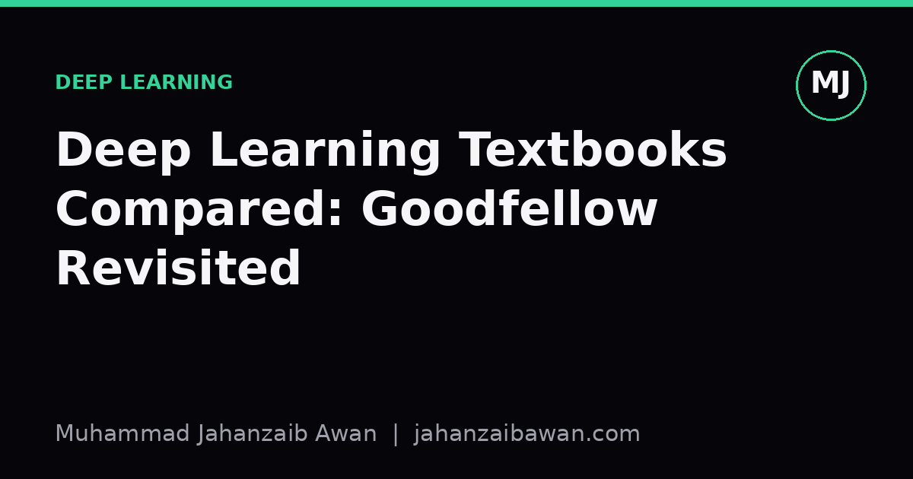

Deep Learning Textbooks Compared: Goodfellow Revisited
New courses keep chasing the latest architecture papers, but the old Goodfellow, Bengio and Courville textbook still teaches the foundations better than most of what has replaced it on reading lists.

Why an eight-year-old book still matters
I keep seeing recommendations to skip the Deep Learning textbook by Goodfellow, Bengio and Courville because it predates transformers, diffusion models, and most of what fills current conference proceedings. That advice is only half right. The book was never meant to be a survey of architectures, and judging it as one misses the point. It is a book about the mathematical and statistical scaffolding underneath the architectures, and that scaffolding has not moved nearly as fast as the architectures themselves.
When I started my MSc, I noticed a pattern among newer students: strong intuition about attention mechanisms, confident use of frameworks, but shaky footing on why a model generalises at all, what a loss surface actually looks like, or why batch normalisation changes the optimisation dynamics rather than just the numbers. Those gaps are not filled by reading the latest paper faster. They are filled by sitting with the kind of explanations the older textbook was built around, because it treats deep learning as applied statistics and optimisation first, and architecture second.
This is not nostalgia for its own sake. I am not arguing the book should be anyone's only resource, and I will be specific later about where it genuinely shows its age. The claim is narrower: on a handful of core ideas, it remains one of the clearest treatments available, and newer books that try to cover more ground often do so by compressing exactly the sections that deserve the most space.
What it gets right: generalisation and regularisation
The chapters on regularisation are, to me, the strongest part of the book, because they resist the temptation to present dropout, weight decay, and early stopping as a grab bag of separate tricks. Instead they are framed consistently as different ways of trading bias for variance, which gives you a mental model you can apply to techniques invented after the book was written.
Take weight decay as a worked example. Imagine training a model with ten thousand parameters on a dataset of two thousand labelled examples, a ratio that practically guarantees overfitting if you train to convergence with no constraint. Without regularisation, training loss might fall to near zero while validation loss climbs steadily after a certain number of epochs, the classic divergence between the two curves. The book's framing is that weight decay is equivalent, under reasonable assumptions, to placing a Gaussian prior on the weights, which pulls parameters towards zero and effectively reduces the model's capacity without changing its architecture. Once you see regularisation as capacity control rather than as a checklist item, you start asking better questions in practice: is my validation gap caused by too much capacity, too little data, or a leak between my train and validation sets that makes the validation score an illusion in the first place.
That last point, distinguishing a genuine generalisation gap from a data leakage artefact, is something the book quietly trains you to be suspicious of, because it keeps returning to the underlying statistical assumption that train and test data are drawn from the same distribution. Most newer, flashier resources treat that assumption as a footnote. In my experience it is the single most common reason a published result fails to reproduce: not a subtle bug in the optimiser, but a split that let information leak from validation into training, inflating a score that then collapses the moment someone runs the model on genuinely unseen data.
What it gets right: optimisation as a search problem
The second area where the book holds up well is its treatment of optimisation, specifically its insistence that you think of training as navigating a high-dimensional, non-convex surface rather than as turning a dial until loss goes down. It spends real time on why saddle points, not local minima, are the dominant obstacle in high dimensions, and why that matters for choosing an optimiser.
A concrete way to see this: picture a loss landscape with a thousand parameters. In low dimensions, like two or three, local minima are common and saddle points are rare, which is why our physical intuition from sketching a bowl-shaped curve on paper is misleading. In a thousand dimensions, the odds that every one of those directions curves upward at a stationary point become vanishingly small, so most stationary points you encounter during training are saddle points, where some directions go up and others go down. Plain gradient descent can crawl along the flat directions near a saddle for a long time before escaping. This is the actual justification for why momentum and adaptive methods like Adam were adopted so widely: not because they make loss curves look nicer in a demo, but because they help the optimiser push through these flat regions faster.
Understanding this changes how you debug a stalled training run. If validation loss plateaus early, the instinct in a lot of newer tutorials is to reach for a bigger model or a different architecture. The optimisation-as-search framing suggests checking the learning rate schedule and the optimiser's momentum term first, because a stalled run often looks identical to an underfit model from the outside, even though the fix is completely different.
Where it falls short, and how to read it today
None of this means the book should be your only source. It predates self-attention as a dominant architecture, it has nothing to say about large-scale pretraining and fine-tuning as a paradigm, and its treatment of generative models reflects the landscape before diffusion-based approaches became standard. If you read only this book, you would have excellent foundations and a significant blind spot about how modern systems are actually built and deployed.
My honest recommendation is to treat it as the layer underneath whatever else you are reading. Pair its chapters on regularisation and optimisation with current papers on the architecture of the moment, and use the book to interrogate those papers rather than to replace them. When a new paper claims an improvement from a novel regularisation scheme, the book gives you the vocabulary to ask whether that improvement is really a capacity change in disguise, or whether a benchmark result might be explained by a subtly leaky evaluation protocol rather than a genuinely better method.
The practical takeaway is simple: do not throw out an older textbook just because its bibliography stops before your favourite architecture was invented. Read it for the parts that have not changed, generalisation, regularisation, and the geometry of optimisation, and read newer material for the parts that have. The two are not competing resources, they are complementary ones, and treating foundational texts as disposable is how good intuition quietly erodes even as everyone's model performance keeps climbing.